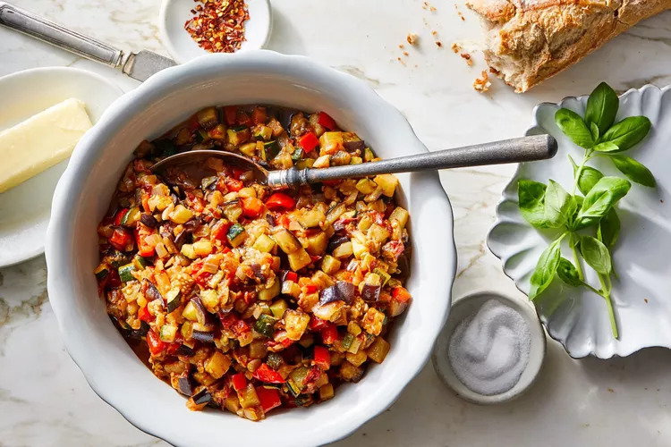

French cuisine, renowned globally for its elegance and variety, is a symphony of flavors, traditions, and culinary expertise. Encompassing a rich tapestry of regional specialties, it captures the essence of sophistication and artistry in gastronomy. From the iconic baguette and creamy Camembert to the exquisite coq au vin and the delicate macarons, each dish epitomizes centuries-old culinary heritage. French cooking techniques and ingredients showcase a commitment to quality and precision, celebrating fresh produce, aromatic herbs, and indulgent sauces. The diverse regions offer distinctive delights, from the bouillabaisse of Provence to the hearty cassoulet of Languedoc, providing an unparalleled gastronomic experience for food enthusiasts worldwide.